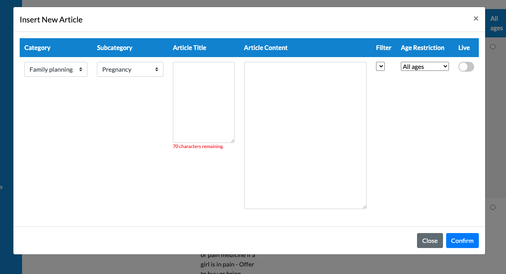
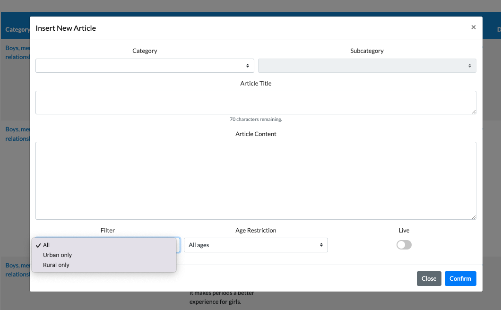

Modify the app and CMS so the encyclopedia displays different entries depending on whether a user registered as urban or rural.
contentFilterOptions in packages/cms/src/optional.ts. Fixed a bug where the ?? fallback used [] instead of the local defaults, causing the dropdown to render empty when @oky/core does not export the field.contentFilter and ageRestrictionLevel to the article save payload in subcategoryViewScript.js so values are submitted to the API on create/edit.ArticleModal.ejs include in both Subcategory.ejs and Encyclopedia.ejs was not passing contentFilterOptions or ageRestrictionOptions to the partial. Updated both includes to forward the variables so the server-side EJS loop can render the options.form-row grid — Category/Subcategory on one row, then Article Title, Article Content, and finally Filter/Age Restriction/Live as a 3-column bottom row. See before/after below.The UI improvement was a prerequisite for Task 2. Without it, CMS editors had no way to assign urban/rural targeting to an article.
Before — Filter field hidden / empty

contentFilterOptions & ageRestrictionOptions not passed to the EJS partialoptional.ts fallback was ?? [] — wiped defaults when @oky/core didn't export the fieldAfter — Filter field visible & functional

contentFilterOptionsoptional.ts fallback changed to ?? contentFilterOptions to preserve local defaults| File | Change |
|---|---|
packages/cms/src/optional.ts | Added Urban only / Rural only to contentFilterOptions. Fixed ?? [] → ?? contentFilterOptions so local defaults survive when @oky/core does not export the field. |
packages/cms/src/views/Subcategory.ejs | Added contentFilterOptions, ageRestrictionOptions to the ArticleModal include call. |
packages/cms/src/views/Encyclopedia.ejs | Same include fix as Subcategory.ejs. |
packages/cms/src/views/modals/ArticleModal.ejs | Restructured modal body from horizontal row to vertical stacked layout. Added Filter and Age Restriction dropdowns with EJS option loops. |
packages/cms/src/public/scripts/subcategoryViewScript.js | Added contentFilter and ageRestrictionLevel to article save payload. Added Filter column to DataTable column definitions. |
No new API changes were required. The contentFilter field already exists in the data pipeline:
| File | Status |
|---|---|
packages/cms/src/entity/Article.ts | Column already declared on the Article entity |
packages/core/src/api/types.ts | contentFilter?: number already in the API response type |
packages/core/src/mappers/encyclopedia.ts | Already mapped: contentFilter: item?.contentFilter |
The field was already wired end-to-end — it just wasn't being set correctly from the CMS form, which is what the CMS changes above fix.
contentFilter value is now available in the API response; the app-side filtering logic is next.false on article creation regardless of user inputWhen creating a new article, the modal's live checkbox can silently reset to unchecked before the form is submitted. The toggle appears active in the UI but the underlying checkbox state is read as false on POST. Found during Task 2 testing — "Understanding period cramps" was toggled live but saved with live: false in the database.
live = true directly in the database via psql.$('#col4TableModal').prop('checked', false) and add a visible label showing current state, so the toggle state is unambiguous before submission.A single continuous video showing:
| Item | Link / Location |
|---|---|
| Continuous video — full demo | to be added |
| Proposed CMS navigation UI | Embedded below |
The current CMS sidebar lists all 14 links in a single unsorted list with no active state. As part of Task 2 (adding urban/rural content targeting to the CMS), the following improvements are proposed to make the CMS easier to navigate — grouping related sections, adding active state highlighting, and adding icons. Colors and content are unchanged.
Two articles used for the Task 2 demo video. Enter these into the CMS to demonstrate the urban/rural content filter working end-to-end.